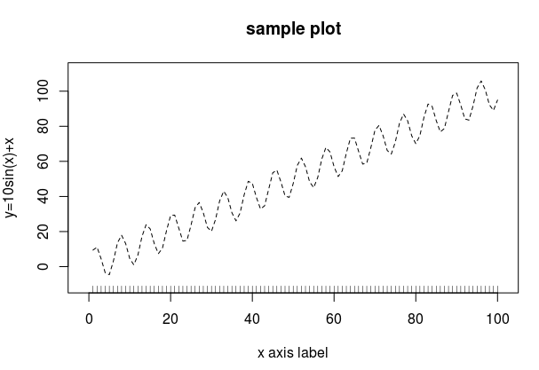
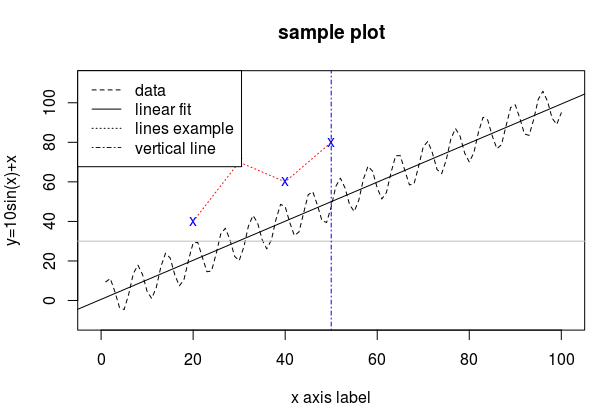

R关于绘图应该可以写很多, 不过这里只列举在compstat这门课里最经常用的几个函数. 关于R的绘图, 详细了解可以运行 demo(graphics)或者 example("plot").
R里面的绘图命令分为两类: 一类是"high-level"的"创建新图片"命令, 运行以后会新画一个图; 另一类则是"low-level"的命令, 不会创建新图片, 而只会在当前图片中修改添加(例如添加线条, 添加点等). 下面分别简单介绍, 最后再介绍其他一些绘图配置的命令.
configurations/parameters
介绍一下常用的参数意义, 以及画图的配置. 详细文档见?par. 这些参数可以放在绘图命令中.
par(mfrow=c(1,2)): 这个命令是设定画图的布局, 把放置图片的区域分为一行两列, 第一个plot的图片在左边, 第二个在右边.col: 设定画图(线段/点)的颜色, 可以用数字(col=1, 2, ...)也可以用英文(col="red", "gray", "blue"等)lty: 设定线段类型, 例如lty=1为实线, lty=2为虚线pch: 设定点的类型(pch="point character")cex: 似乎是设定文字大小的, 一般设置cex=0.6
high level命令: plot
创建新图片的命令主要就是plot这个函数 (其他还有如hist, contour, boxplot, 不太常用, 看文档应该能会用).
plot的内容或者为一系列x和y坐标, 或者为一个formula(见plot.formula). :
type: 指定画线(type="l")或者画点(type="p", 默认值).
当type="l"的时候, 可以设定lty参数, type="p"则可以设定pch参数.
当type="n"的时候表示不画任何东西 — 然后可以用后面介绍的low level命令往里面添加东西.
-
main: 设定图片的标题 -
xlab/ylab: x/y轴的文字 -
xlim/ylim: 设定x/y轴的范围, 例如:xlim=c(0,10).
这个参数比较重要, 如果想要根据数据来动态调整的话, 可以使用extendrange函数, 它返回比数据range稍大一点的range:
> extendrange(1:10) [1] 0.55 10.45
一个plot的例子:
plot(x, y, type="l", lty=2,
xlab="x axis label", ylab="y=10sin(x)+x",
main="sample plot",
xlim=c(-1, 101), ylim=extendrange(y) )

low level命令
points
points(x, y)
添加(多个)点, 这些点的坐标在x和y中.
此时可以用pch参数指定点的类型.
lines
lines(x, y)
添加多条线段, 这些线段依次经过一系列的点, 而点的xy坐标放在x和y中.
此时可以设定lty指定线段类型.
abline
这个函数作用是添加一条直线, 可以传入lty参数.
abline有多种用法:
abline(a=a, b=b): 指定斜率和截距(y=ax+b)abline(h=y0)/abline(v=x0): 画水平/垂直的线abline(reg=lm_fit): reg为有coeff的对象(如一个线性fit), 画出fitted line
rug
rug(x)的作用是在x轴添加小线段, 位置为参数x.
lengend
添加图例, 直接看例子:
legend("topleft", c("data", "fitted"), lty=1:2)
这样在左上角(其他可选项见文档)添加图例, 文字"data"对应lty=1的数据, "fitted"对应lty=2的.
example
下面是一个low level绘图例子(在前一个图基础上添加各种东西):
newpts.x <- c(20, 30, 40, 50) newpts.y <- c(40, 70, 60, 80) points(newpts.x, newpts.y, pch='x', col="blue") lines(newpts.x, newpts.y, lty=3, col="red") abline(h=30, col="gray") abline(v=50, col="blue", lty=4) fit <- lm(y~x) # fit to linear model abline(fit, lty=1) legend("topleft", c("data", "linear fit", "lines example", "vertical line"), lty=c(2, 1, 3, 4), col=c(rep("black",3), "blue"))


Comments !